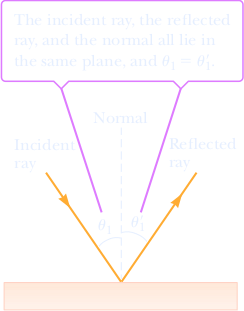

Reflection of Light
When a light ray traveling in a transparent medium encounters a boundary leading into a second medium, part of the incident ray is reflected back into the first medium. Figure 22.2a shows several rays of a beam of light incident on a smooth, mirror-like reflecting surface. The reflected rays are parallel to one another, as indicated in the figure. The reflection of light from such a smooth surface is called specular reflection. On the other hand, if the reflecting surface is rough, as in Figure 22.2b, the surface reflects the rays in a variety of directions. Reflection from any rough surface is known as diffuse reflection. A surface behaves as a smooth surface as long as its variations are small compared with the wavelength of the incident light. Figures 22.2c and 22.2d are photographs of specular and diffuse reflection of laser light, respectively.
As an example, consider the two types of reflection from a road surface that someone might observe while driving at night. When the road is dry, light from oncoming vehicles is scattered off the road in different directions (diffuse reflection) and the road is clearly visible. On a rainy night when the road is wet, the road’s irregularities are filled with water. Because the wet surface is smooth, the light undergoes specular reflection. This means that the light is reflected straight ahead, and the driver of a car sees only what is directly in front of him. Light from the side never reaches the driver’s eye. In this book, we concern ourselves only with specular reflection, and we use the term reflection to mean specular reflection.
Consider a light ray traveling in air and incident at some angle on a flat, smooth surface, as in Figure 2. The incident and reflected rays make angles θ1 and θ1', respectively, with a line perpendicular to the surface at the point where the incident ray strikes the surface. We call this line the normal to the surface. Experiments show that the angle of reflection equals the angle of incidence:
θ1 = θ1'